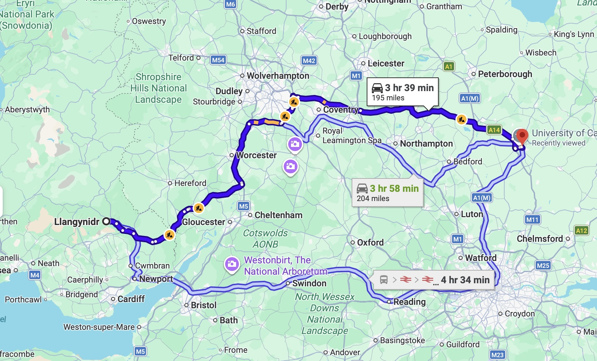

After spending a few weeks with my grandfather in Wales, it was finally time to continue our move. We packed our belongings into the car and began the long drive to Cambridge.
The route took us through the English countryside and past places we had never seen before. As we got closer to Cambridge, I became more excited—and a little nervous—about starting a new chapter of my life.
